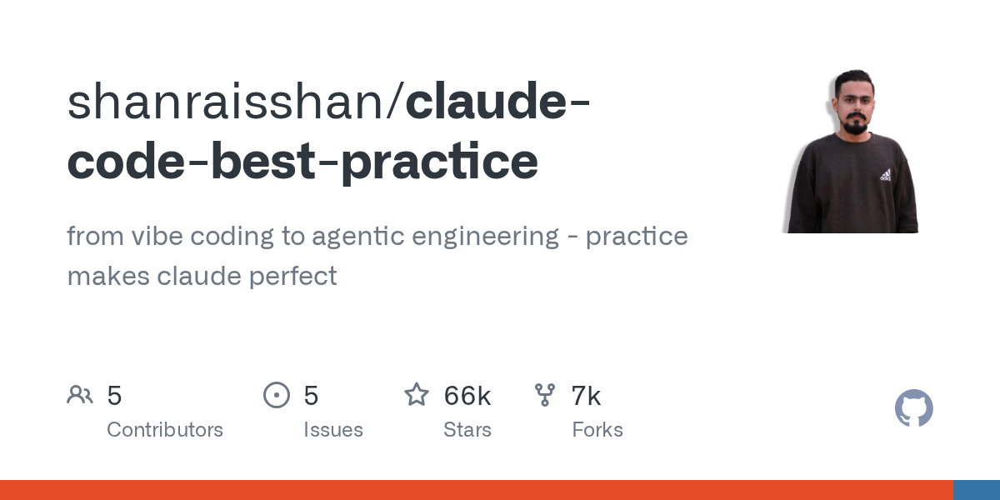

06 GitHub
shanraisshan/claude-code-best-practice
Claude Code 팀 운영법을 한곳에 모았다
★ 65,665HTMLMIT 사내 사용 가능최근 활동 09.06테스트 없음예제 없음AGENTS.md 없음

이 저장소는 실행 파일보다 운영 가이드에 가깝다. Claude Code를 개인 도구가 아니라 팀 업무 체계로 쓰는 법을 모았다. 계획, 실행, 검토, 배포를 어떤 단위로 나눌지 예시를 준다. 다른 모델을 같이 쓰는 연결 방식도 한 화면에서 정리한다.
무엇을 하는 물건인가
이 저장소는 Claude Code 활용법을 모은 실무 참고서다. 어떤 일을 명령으로 만들고, 어떤 일은 에이전트나 스킬로 분리할지 예시를 보여준다. 팀 규칙 파일과 세션 운영법, 디버깅 팁도 모아뒀다. 사내 업무 매뉴얼과 우수 사례집을 한 권으로 합친 모습에 가깝다.
스펙과 도입 조건
- 언어는 HTML로 표기돼 있다.
- 설치형 패키지나 바이너리 정보는 없다.
- 외부 API 키 필요 여부는 이 저장소 기준으로 확인되지 않았다.
- 라이선스는 MIT다.
- 릴리스는 없다.
이럴 때 쓰면 좋다
- AI 코딩 도구를 시범 도입한 뒤 팀마다 쓰는 법이 달라 산출물 편차가 클 때 공통 운영 틀을 잡는 참고자료로 쓸 수 있다.
- 고객 문의 분류나 규정 문서 정리처럼 반복 업무를 Claude Code 명령과 스킬로 쪼개 설계할 때 예시를 빌려올 수 있다.
- 야간 장애 대응 후 회고에서 조사, 계획, 실행, 검토 단계를 어떻게 분리할지 팀 워크플로 초안을 만들 때 도움이 된다.
핵심 기능
- Research → Plan → Execute → Review → Ship 흐름으로 주요 개발 워크플로를 정리한다.
- Plugin, MCP, Router 세 방식으로 Claude Code와 다른 모델을 함께 쓰는 방법을 설명한다.
- 에이전트, 명령, 스킬, 훅, 메모리, 세션 관리 팁을 항목별로 모아둔다.
대안 대비 차별점
이 저장소는 설치형 도구보다 참고서에 가깝다. Claude를 챗봇처럼만 쓰지 말고 agent, command, skill, hook을 조합하라고 안내한다. /weather-orchestrator 예제로 전체 흐름을 보여준다.
다른 모범 사례 모음과 비교하면 범위가 넓다. 개인 프롬프트 요령에 그치지 않는다. 세션 관리, 규칙 파일, Git과 PR, 디버깅, 일상 사용까지 묶었다. 다른 모델을 붙이는 방법도 Plugin, MCP, Router로 나눠 설명한다.
저장소 구조도 바로 보여준다.
| 기능 | 위치 | 설명 |
|---|---|---|
| Subagents | .claude/agents/.md | 서브에이전트 정의 |
| Commands | .claude/commands/.md | 명령 정의 |
| Skills | .claude/skills//SKILL.md | 공식 Skills·모노레포용 Skills |
| Workflows | .claude/commands/weather-orchestrator.md | 워크플로 예시 |
| Hooks | .claude/hooks/ | 가이드 |
| MCP Servers | .claude/settings.json, .mcp.json | MCP 서버 설정 |
사내 도입 체크
- 외부 API 호출은 이 저장소 자체가 아니라 연결 대상 도구 설정에 따라 달라진다. 실제 운용 전 확인이 필요하다.
- 메모리 파일과 규칙 파일에 내부 문서가 들어갈 수 있다. 저장 위치와 공유 범위를 정해야 한다.
- 유지보수 주체는 개인 개발자다.
- 직접 대체하는 상용 제품보다 사내 교육 자료나 운영 표준 문서의 대안에 가깝다.
주요 용어
원문 정보
제목: shanraisshan/claude-code-best-practice
최근 활동: 2026.09.06
출처 URL: https://github.com/shanraisshan/claude-code-best-practice